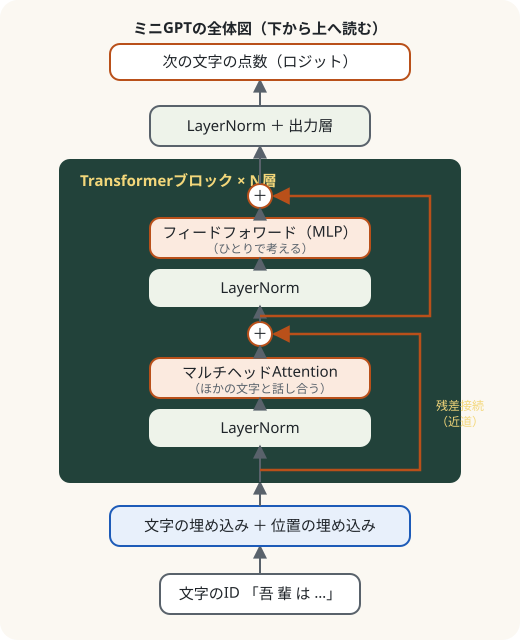

第3部 Transformerを組み立てる · 第12章
部品を組み立てる：Transformer
話し合い（Attention）と、ひとりで考える時間（MLP）を、何層も積み重ねる
おすすめは「ページを読みながら、コードを自分のノートブックに1セルずつ貼って実行」。完成ノートは困ったときの答え合わせ用です。
つくるもの
GPTそのもの。マルチヘッドAttention・フィードフォワード・残差接続・LayerNormを組み合わせたミニGPTのクラス（第13章以降で使う minigpt.py と同じコード）
ついでに身につく理論
- マルチヘッドAttention（分業）
- フィードフォワード層（各位置で考える）
- 残差接続（情報と勾配の高速道路）
- Pre-LN（正規化してから処理する）
- GPTの全体構造とパラメータの内訳
- まず1バッチで過学習させるテスト
新しく使うPython
nn.ModuleListとnn.Sequentialtorch.catでつなげるself.applyで全部品を初期化named_parametersで中身を調べる

ミナト
Transformerって、「変形ロボット」みたいな名前ですよね。

ボンゴ先生
英語の transform は「変換する」だ。入力の文字列を、少しずつ「次の文字を当てやすい表現」に変換していく装置、という意味だよ。……まあ、合体ロボットっぽさはある。小さな部品を組み合わせて、巨大なものを作るからね。今日はキミが組み立て係だ。
準備
import re, math, urllib.request
import torch
import torch.nn as nn
import torch.nn.functional as F
def load_soseki(file_id="773_ruby_5968"):
url = ("https://raw.githubusercontent.com/aozorahack/aozorabunko_text/master/"
f"cards/000148/files/{file_id}/{file_id}.txt")
text = urllib.request.urlopen(url).read().decode("cp932")
text = text.split("-------------------------------------------------------")[2]
text = text.split("底本：")[0]
text = re.sub(r"《.*?》", "", text)
text = re.sub(r"※?［＃.*?］", "", text)
text = text.replace("｜", "").replace("\r\n", "\n")
text = re.sub(r"\n{3,}", "\n\n", text)
return text.strip()
text = load_soseki()
chars = sorted(set(text))
V = len(chars)
stoi = {ch: i for i, ch in enumerate(chars)}
itos = {i: ch for ch, i in stoi.items()}
data = torch.tensor([stoi[c] for c in text])
n = int(len(data) * 0.9)
train_data, val_data = data[:n], data[n:]
def get_batch(data, batch_size, T, g):
ix = torch.randint(0, len(data) - T, (batch_size,), generator=g)
x = torch.stack([data[i:i + T] for i in ix])
y = torch.stack([data[i + 1:i + T + 1] for i in ix])
return x, y全体図
先に完成図を見ておきましょう。下から上に、データが流れていきます。

部品は5種類だけです。
- Head（第11章で作ったAttentionヘッド）
- MultiHeadAttention：ヘッドを何個も並べたもの
- FeedForward：各位置で「考える」小さなMLP（第9章の親戚）
- Block：2と3を、LayerNormと残差接続でつないだもの
- GPT：埋め込み＋Blockを何層も＋出力層
順番に作っていきましょう。
部品1：Head（おさらい）
第11章のHeadに、ドロップアウト（第10章）を1行足しただけです。
class Head(nn.Module):
"""Attentionヘッド1つ（第11章）"""
def __init__(self, n_embd, head_size, block_size, dropout):
super().__init__()
self.key = nn.Linear(n_embd, head_size, bias=False)
self.query = nn.Linear(n_embd, head_size, bias=False)
self.value = nn.Linear(n_embd, head_size, bias=False)
self.register_buffer("tril", torch.tril(torch.ones(block_size, block_size)))
self.dropout = nn.Dropout(dropout)
def forward(self, x):
B, T, C = x.shape
k, q, v = self.key(x), self.query(x), self.value(x)
scores = q @ k.transpose(-2, -1) / math.sqrt(k.shape[-1])
scores = scores.masked_fill(self.tril[:T, :T] == 0, float("-inf"))
self.wei = F.softmax(scores, dim=-1)
return self.dropout(self.wei) @ v部品2：マルチヘッドAttention
class MultiHeadAttention(nn.Module):
"""ヘッドを何個も並べて、結果をつなげる"""
def __init__(self, n_embd, n_head, block_size, dropout):
super().__init__()
head_size = n_embd // n_head
self.heads = nn.ModuleList([Head(n_embd, head_size, block_size, dropout) for _ in range(n_head)])
self.proj = nn.Linear(n_embd, n_embd)
self.dropout = nn.Dropout(dropout)
def forward(self, x):
out = torch.cat([h(x) for h in self.heads], dim=-1)
return self.dropout(self.proj(out))
mha = MultiHeadAttention(n_embd=64, n_head=4, block_size=8, dropout=0.0)
x = torch.randn(2, 8, 64)
print(mha(x).shape)torch.Size([2, 8, 64])部品3：フィードフォワード（考える時間）
class FeedForward(nn.Module):
"""各位置で、ひとりで「考える」MLP"""
def __init__(self, n_embd, dropout):
super().__init__()
self.net = nn.Sequential(
nn.Linear(n_embd, 4 * n_embd),
nn.GELU(),
nn.Linear(4 * n_embd, n_embd),
nn.Dropout(dropout),
)
def forward(self, x):
return self.net(x)部品4：Block（残差接続とLayerNorm）
class Block(nn.Module):
"""Transformerブロック：話し合い（Attention）→ 考える（FeedForward）"""
def __init__(self, n_embd, n_head, block_size, dropout):
super().__init__()
self.ln1 = nn.LayerNorm(n_embd)
self.attn = MultiHeadAttention(n_embd, n_head, block_size, dropout)
self.ln2 = nn.LayerNorm(n_embd)
self.ffwd = FeedForward(n_embd, dropout)
def forward(self, x):
x = x + self.attn(self.ln1(x))
x = x + self.ffwd(self.ln2(x))
return xたった2行の forward ですが、ここにTransformerの設計の知恵が詰まっています。
部品5：GPT（全体）
最後に、全部をつなげます。
class GPT(nn.Module):
def __init__(self, vocab_size, block_size=128, n_embd=128, n_head=4, n_layer=4, dropout=0.1):
super().__init__()
self.block_size = block_size
self.tok_emb = nn.Embedding(vocab_size, n_embd)
self.pos_emb = nn.Embedding(block_size, n_embd)
self.drop = nn.Dropout(dropout)
self.blocks = nn.Sequential(*[Block(n_embd, n_head, block_size, dropout) for _ in range(n_layer)])
self.ln_f = nn.LayerNorm(n_embd)
self.lm_head = nn.Linear(n_embd, vocab_size)
self.apply(self._init_weights)
def _init_weights(self, module):
if isinstance(module, (nn.Linear, nn.Embedding)):
nn.init.normal_(module.weight, mean=0.0, std=0.02)
if isinstance(module, nn.Linear) and module.bias is not None:
nn.init.zeros_(module.bias)
def forward(self, idx, targets=None):
B, T = idx.shape
pos = torch.arange(T, device=idx.device)
x = self.drop(self.tok_emb(idx) + self.pos_emb(pos))
x = self.blocks(x)
logits = self.lm_head(self.ln_f(x))
loss = None
if targets is not None:
loss = F.cross_entropy(logits.view(B * T, -1), targets.view(B * T))
return logits, loss
@torch.no_grad()
def generate(self, idx, max_new_tokens, temperature=1.0, top_k=None):
for _ in range(max_new_tokens):
idx_cond = idx[:, -self.block_size:] # 窓に入る分だけ
logits, _ = self(idx_cond)
logits = logits[:, -1, :] / temperature # 最後の位置の点数
if top_k is not None:
v, _ = torch.topk(logits, min(top_k, logits.size(-1)))
logits[logits < v[:, [-1]]] = -float("inf")
probs = F.softmax(logits, dim=-1)
next_id = torch.multinomial(probs, num_samples=1)
idx = torch.cat([idx, next_id], dim=1)
return idx動かしてみる
CPUでも動く小さめの設定で、GPTを作ってみましょう。
torch.manual_seed(0)
model = GPT(V, block_size=64, n_embd=64, n_head=4, n_layer=2, dropout=0.0)
total = sum(p.numel() for p in model.parameters())
print(f"パラメータの数：{total:,}")
groups = {"埋め込み（文字・位置）": 0, "Transformerブロック": 0, "最後のLayerNorm＋出力層": 0}
for name, p in model.named_parameters():
if name.startswith(("tok_emb", "pos_emb")):
groups["埋め込み（文字・位置）"] += p.numel()
elif name.startswith("blocks"):
groups["Transformerブロック"] += p.numel()
else:
groups["最後のLayerNorm＋出力層"] += p.numel()
for k, v in groups.items():
print(f" {k}：{v:,}（{v / total:.0%}）") # :, は3桁ごとのカンマ、:.0% はパーセント表示パラメータの数：369,677
埋め込み（文字・位置）：136,000（37%）
Transformerブロック：99,584（27%）
最後のLayerNorm＋出力層：134,093（36%）まだ小さなモデルなので、語彙（2061文字）に関わる埋め込みと出力層がパラメータの大半を占めています。Blockを増やしたり、n_embd を大きくしたりすると、Transformerブロックの割合が増えていきます。
第10章の診察その1、「最初の損失を見る」もやっておきましょう。
g = torch.Generator().manual_seed(0)
x, y = get_batch(train_data, 8, 64, g)
_, loss = model(x, y)
print("最初の損失：", round(loss.item(), 3), " log V：", round(math.log(V), 3))最初の損失： 7.656 log V： 7.631とほぼ一致。初期化は健康です。
1バッチで丸暗記させるテスト
第10章で紹介した研究者の口ぐせ「まず小さなデータで過学習させてみよ」を実行します。同じ1バッチだけを300回学習させて、丸暗記できるか試します。
torch.manual_seed(0)
model = GPT(V, block_size=64, n_embd=64, n_head=4, n_layer=2, dropout=0.0)
opt = torch.optim.AdamW(model.parameters(), lr=3e-3)
x, y = get_batch(train_data, 8, 64, torch.Generator().manual_seed(0)) # この1バッチだけ
for step in range(301):
_, loss = model(x, y)
opt.zero_grad()
loss.backward()
opt.step()
if step % 100 == 0:
print(f"ステップ {step}：損失 {loss.item():.3f}")ステップ 0：損失 7.656
ステップ 100：損失 0.025
ステップ 200：損失 0.012
ステップ 300：損失 0.009損失がほぼ0になりました。モデルは、このバッチの文章を完全に丸暗記しました。丸暗記ができる＝モデルと学習ループにバグがない、ことの確認です。もし下がらなかったら、どこかの部品のつなぎ方を間違えています（ModuleList を普通のリストにしてしまった、など）。
『こころ』で少しだけ学習させる
本格的な学習は第13章でGPUを使ってやります。ここでは、CPUで1500ステップだけ学習させて、ちゃんと学べることを確かめます。
@torch.no_grad()
def val_loss(model, T):
model.eval()
starts = range(0, len(val_data) - T - 1, T)
xs = torch.stack([val_data[i:i + T] for i in starts])
ys = torch.stack([val_data[i + 1:i + T + 1] for i in starts])
loss = model(xs, ys)[1].item()
model.train()
return loss
torch.manual_seed(0)
g = torch.Generator().manual_seed(0)
model = GPT(V, block_size=64, n_embd=64, n_head=4, n_layer=2, dropout=0.1)
opt = torch.optim.AdamW(model.parameters(), lr=3e-3)
for step in range(1501):
x, y = get_batch(train_data, 32, 64, g)
_, loss = model(x, y)
opt.zero_grad()
loss.backward()
opt.step()
if step % 500 == 0:
print(f"ステップ {step:4d}：訓練 {loss.item():.3f} 検証 {val_loss(model, 64):.3f}")ステップ 0：訓練 7.646 検証 7.495
ステップ 500：訓練 3.092 検証 3.316
ステップ 1000：訓練 3.041 検証 3.148
ステップ 1500：訓練 2.741 検証 3.0971500ステップ、たった37万個のパラメータで、第11章の1ヘッドモデル（28万個、2000ステップで3.31）より良い検証損失になりました。まだ下がり続けています。続きは、第13章でGPUを使って思う存分やりましょう。
model.eval()
torch.manual_seed(0)
start = torch.tensor([[stoi[c] for c in "私はその人を"]])
out = model.generate(start, max_new_tokens=80, temperature=0.8)
print("".join(itos[i] for i in out[0].tolist()))私はその人を選んな一人の間に見て、今、念とうとうところでした。私は一種を語る時々らなくなった。父はまた私を欺くより返して来た。私に告げた一人にする親類を利き事があった。このこのコードの行き先
この章で書いた5つのクラス（Head、MultiHeadAttention、FeedForward、Block、GPT）は、教科書のリポジトリに code/minigpt.py として、まったく同じ内容で置いてあります。第13章からは、毎回このファイルをダウンロードして使います。あなたが書いたものと同じものです。自信を持って import してください。
もっと深く本物のGPT-2との違い
この章のGPTと、OpenAIが2019年に公開したGPT-2の構造は、ほとんど同じです。違いは主に次の3つで、第15章で本物のGPT-2の重みを読み込むときに、ここを合わせます。
- GPT-2は、Q・K・Vを作る3つの全結合層を1つにまとめている（計算が速い）。数学的には同じ
- GPT-2は、Q・K・Vの全結合層にもバイアスがある
- GPT-2は、出力層の重みを文字の埋め込みの表と共有している（weight tying。パラメータの節約）
大きさは、GPT-2の一番小さい版で12層・12ヘッド・768次元、約1億2400万パラメータです。
クイズ 1：残差接続
x = x + self.attn(self.ln1(x)) を x = self.attn(self.ln1(x)) に変えると、何が困る？
答えを見る（まず自分で考えてから！）
元の情報が層を通るたびに置き換えられて失われやすくなり、また誤差逆伝播で勾配が層を通るたびに弱まって、深いモデルが学習しにくくなります。足し算でつなぐと、情報も勾配も「近道」を通れます。
クイズ 2：マルチヘッド
n_embd=384、n_head=6 のとき、1つのヘッドの大きさ（head_size）は？
答えを見る（まず自分で考えてから！）
384 ÷ 6 ＝ 64 です。6つのヘッドの出力（64ずつ）をつなげると、384に戻ります。
クイズ 3：1バッチテスト
新しいモデルを作ったら、なぜ最初に「1バッチで丸暗記できるか」を試すの？
答えを見る（まず自分で考えてから！）
丸暗記すらできないなら、モデルの部品のつなぎ方や学習ループにバグがあると分かるからです。逆に、丸暗記できれば、少なくとも学習の仕組みは正しく動いています。大きなデータで何時間も学習させてから失敗に気づくより、ずっと早くバグを見つけられます。
できたらチェック
ボンゴ先生
組み立て完了！ キミのGPTは、まだCPUで少し走っただけの子馬だ。次の章では、GPUという牧場で、漱石の小説を100万字読ませて、思い切り走らせる。どこまで速くなるか、楽しみだね。
押すと目次にチェックが付きます（この端末のブラウザにだけ保存）。